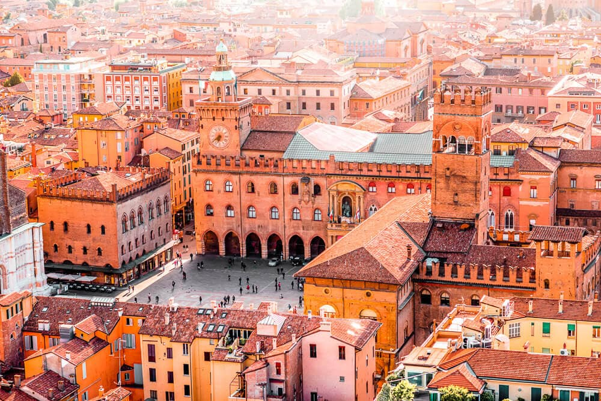
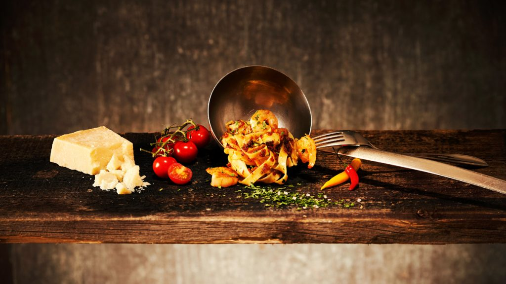
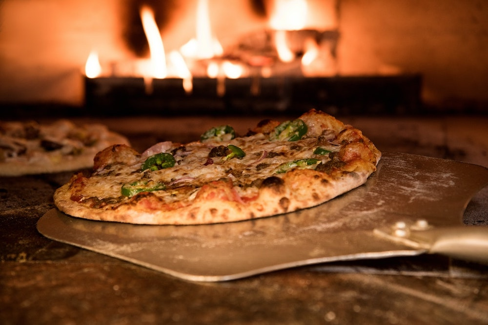
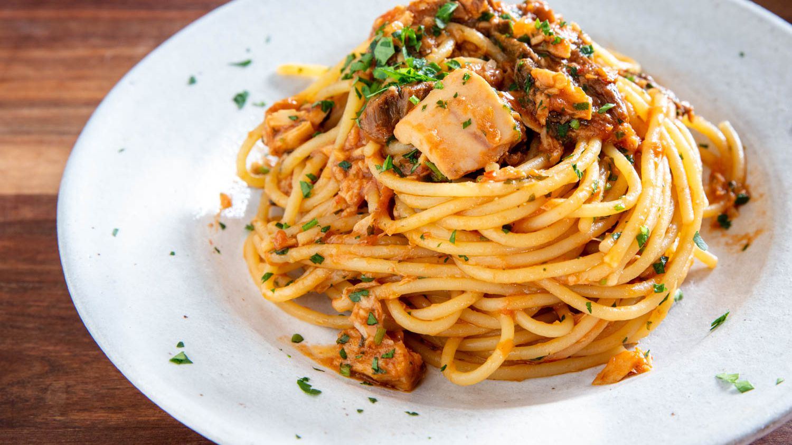
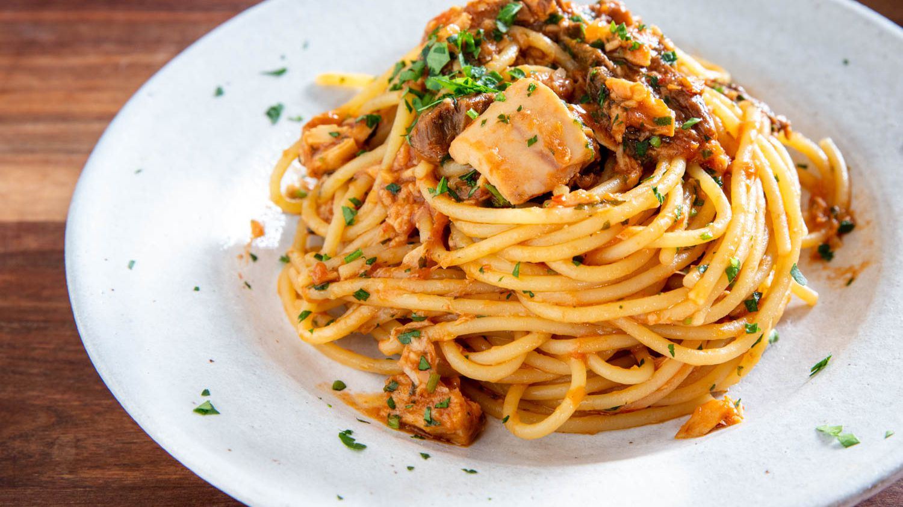

a European country with a long Mediterranean coastline, has left a powerful mark on Western culture and cuisine

Cities
Its capital, Rome, is home to the Vatican as well as landmark art and ancient ruins. Other major cities include Florence, with Renaissance masterpieces such as Michelangelo’s "David" and Brunelleschi's Duomo; Venice, the city of canals; and Milan, Italy’s fashion capital.
Learn about David, Michelangelo's most famous sclupture
City Comparison
| City |
Population |
Size |
Tourists (2019) |
Most Popular Place |
| Rome |
2,873,000 |
1,290 km² |
10,317,000 |
Pantheon |
| Milan |
1,352,000 |
181.8 km² |
6,604,400 |
Duomo di Milano |
| Venice |
261,905 |
414.6 km² |
5,590,500 |
St. Mark's Basilica |
| Florence |
382,258 |
102.4 km² |
5,125,700 |
Uffizi Gallery |

Italian Food
Here is a quote from wikipedia:
Italian cuisine (Italian: Cucina italiana, pronounced [ku'tʃiːna ita'ljaːna])
is a Mediterranean cuisine consisting of the ingredients, recipes and cooking
techniques developed across the Italian Peninsula since antiquity, and later
spread around the world together with waves of Italian diaspora.
Famous Italian Dishes (click the images to learn more about them!)

 



How to Cook Dried Pasta, Step-by-Step
- Step 1: Boil Water
- Start with a very large pot of water, about 6 quarts per pound of pasta. Bring it to a rapid boil.
- Step 2: Add Salt
- Put in a lot of salt, about 3 tablespoons. If you taste the water, it should taste like the sea.
- Step 3: Add the Pasta
- Drop in the pasta while the water is at a boil and give it a gentle stir.
- Step 4: Stir
- Stir it occasionally while it cooks. Use the cooking time on the pasta package as a guide.
- Step 5: Taste the Pasta
- But watch out — it's hot! Sample the pasta at about 2 minutes shy of the indicated time. It should be al dente. You'll finish cooking it in the sauce.
- Step 6: Drain
- Drain the pasta. Just be sure to save about 1 cup of the pasta water. If you have a pot with a colander insert, use it to drain the pasta. If not, drain the pasta in a colander set in the sink.
- Step 7: Removing Ravioli
- If you're cooking ravioli, use a slotted skimmer and gently lift the ravioli a few at a time.
- Step 8: Stir In the Sauce
- Add the pasta to your sauce and finish cooking it in the sauce. Give it a stir to coat.
- Step 9: Add Pasta Water
- Ladle a few tablespoons of the pasta water at a time until you have the right consistency to your sauce. Remember, the pasta will absorb the liquid. Tip: Pasta water helps to thicken the sauce.
- Step 10: Buon Appetito!
- Simmer over medium-low heat — it'll help the pasta soak up the sauce. Follow your recipe's instructions for finishing the dish. And that's all there is to it. Perfecto!